Valldaura 66
Varias campañas para Meta y Google Ads, y flyers impresos, para una promoción de obra nueva en Barcelona.
Several Meta and Google Ads campaigns, plus printed flyers, for a new-build development in Barcelona.


- Sector
- Inmobiliario · obra nueva en ventaReal estate · new build for sale
- UbicaciónLocation
- Barrio de Horta, BarcelonaHorta, Barcelona
- AñoYear
- 2025–26
- Mi rolMy role
- Diseño de las creatividades de cada campaña para Meta y Google Ads y de los flyers impresos.Design of the creatives for each Meta and Google Ads campaign and of the printed flyers.
- EntregablesDeliverables
- Varias campañas: posts, stories y vídeos para Meta, banners de display y flyers A4Several campaigns: posts, stories and videos for Meta, display banners and A4 flyers
01El retoThe challenge
Vender las viviendas de 2 y 3 dormitorios de una promoción de obra nueva en el barrio de Horta, con una campaña distinta en cada fase: obras iniciadas, plantas bajas con jardín, últimas viviendas y visitas al showroom de la Avenida Diagonal.Sell the 2 and 3-bedroom homes in a new-build development in Horta, Barcelona, with a different campaign for each phase: construction under way, ground floors with gardens, last homes left and visits to the showroom on Avenida Diagonal.
02ProcesoProcess
- Una campaña por faseOne campaign per phase
Cada campaña cambia el mensaje según el momento de la promoción, sin cambiar el sistema visual.Each campaign changes the message to match the stage of the development, without changing the visual system.
- Los equipamientos en iconosAmenities as icons
Zonas verdes, piscina, zona infantil, garaje y trastero, con el mismo set de iconos en todas las piezas.Green areas, pool, playground, parking and storage, with the same icon set in every piece.
- Del feed al papelFrom feed to paper
El mismo sistema en dorado y negro pasa a los banners de display y a los flyers A4.The same gold and black system carries over to the display banners and the A4 flyers.
03SoluciónSolution
Campañas en feed y stories para Meta, banners para Google Ads y dos flyers A4.Meta feed and stories campaigns, Google Ads banners and two A4 flyers.
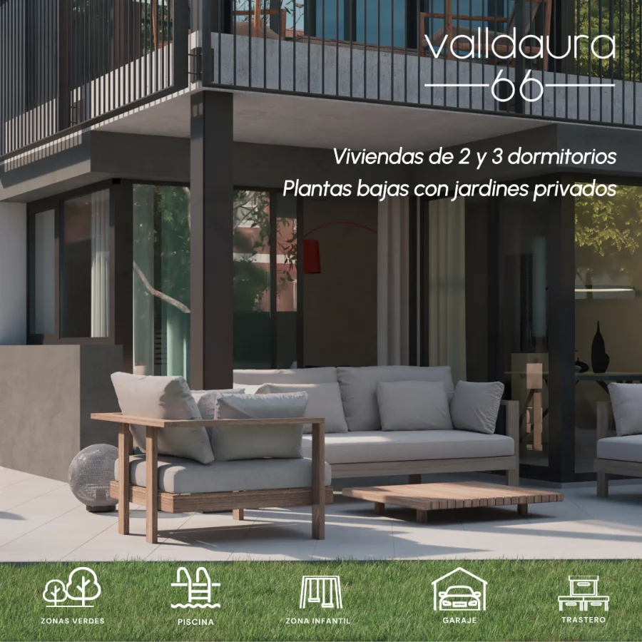
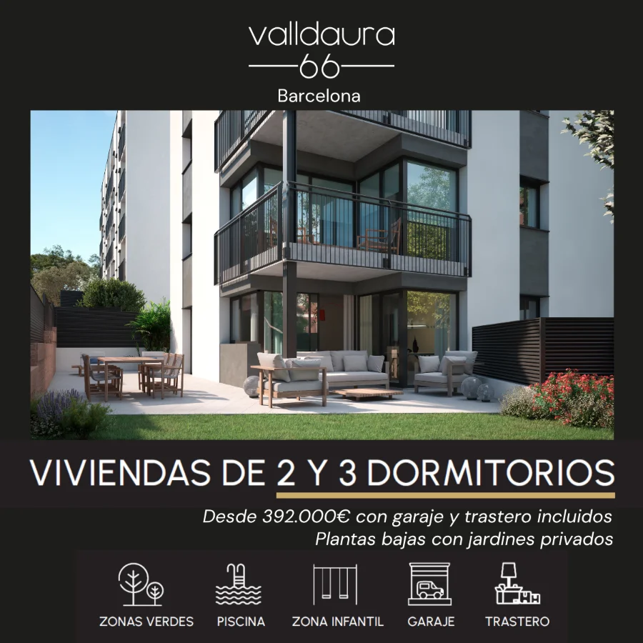
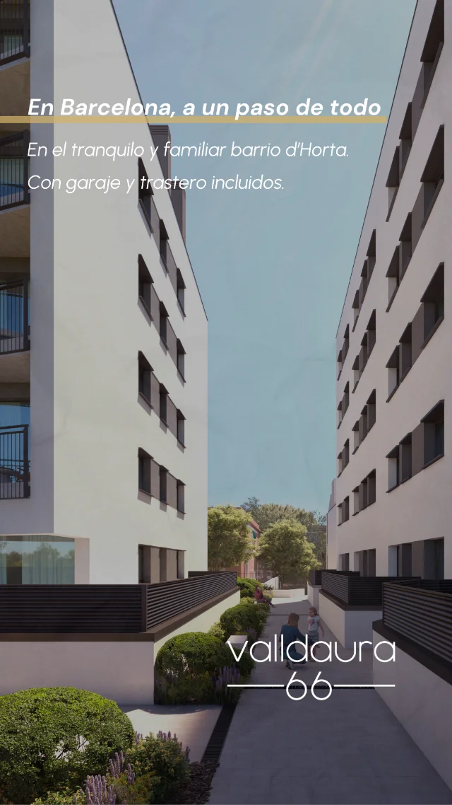
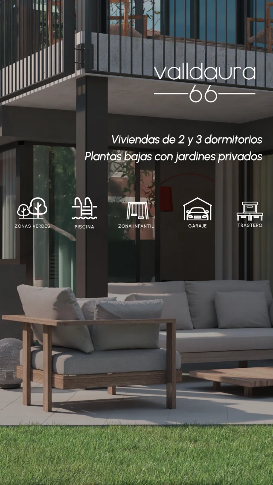
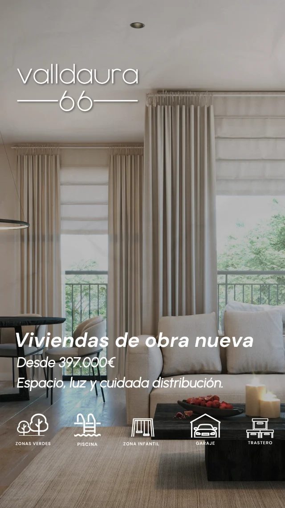
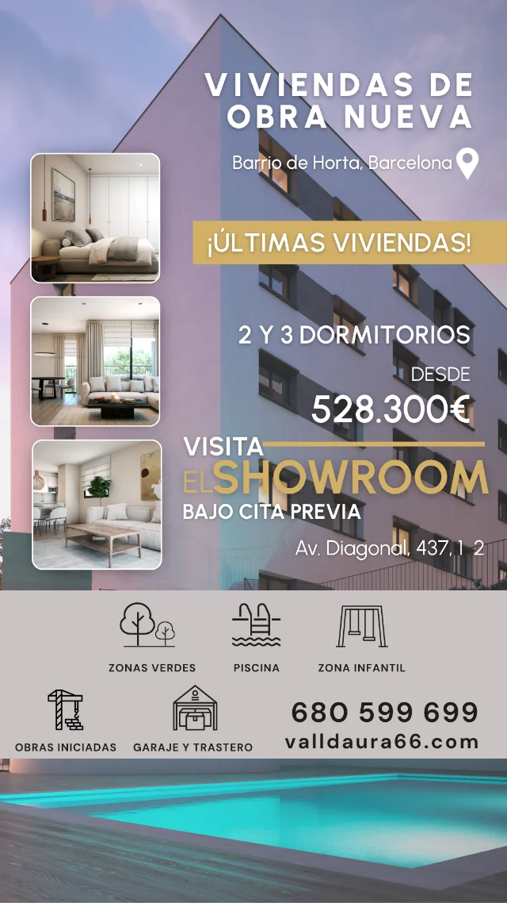
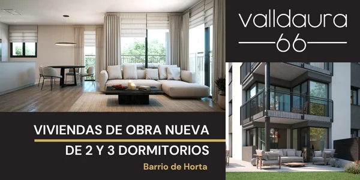
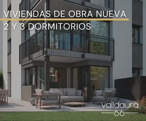
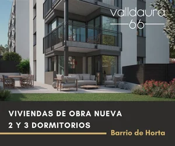
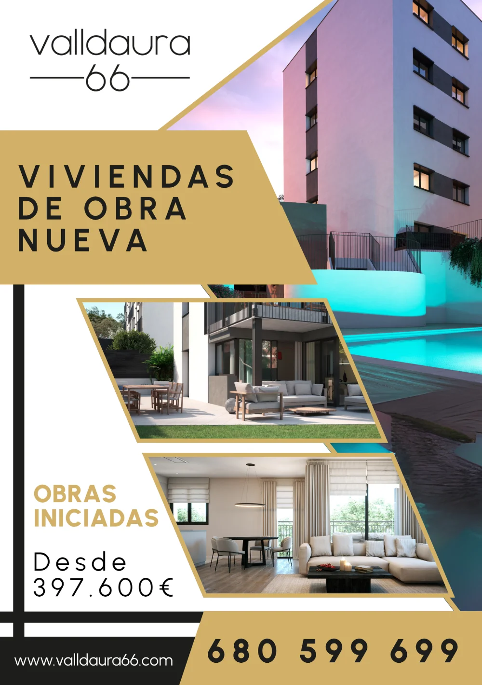
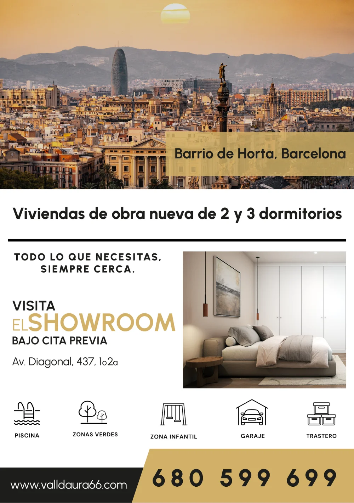